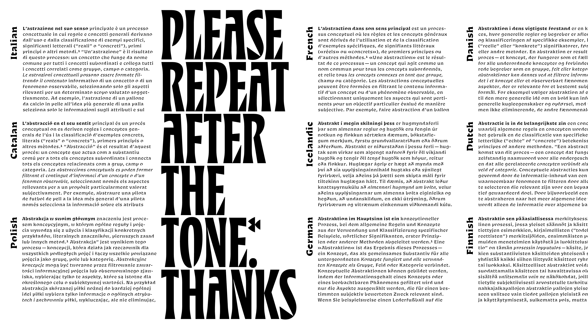
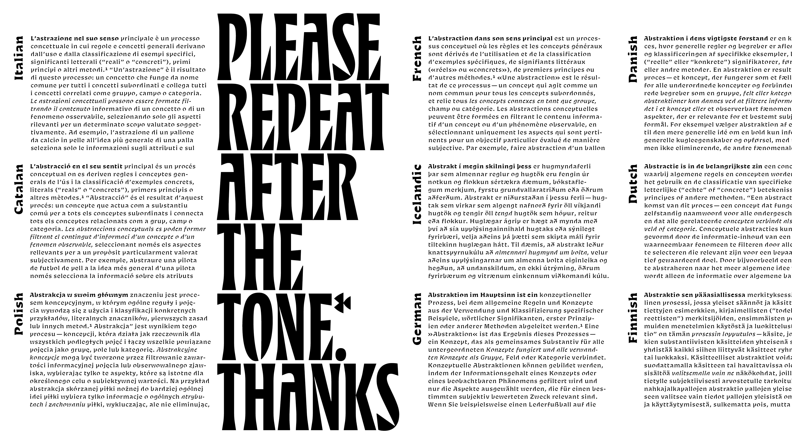

Spec
Spec shows both the graphic and functional sides of abstraction. Half of the family is designed for up-close viewing, and the other half is for long-distance: Spec Near and Spec Far. Near compresses the alphabet, simplifying shapes and crunching letter-widths. Far interprets the same shapes in a cruder manner, ruthlessly prying negative spaces open and filling closed forms. Across the whole family, Spec lets the reader’s mind do some of the work.
Ryan Bugden
Ryan Bugden is an independent graphic and type designer based in Brooklyn. Before graduating from Type and Media, he received his BFA in Graphic Design from RISD, completed the Type@Cooper Extended Program, and worked as a senior designer at Pentagram and Red Antler. He is now taking on new projects and teaching at his type design course Type Sessions.
 
